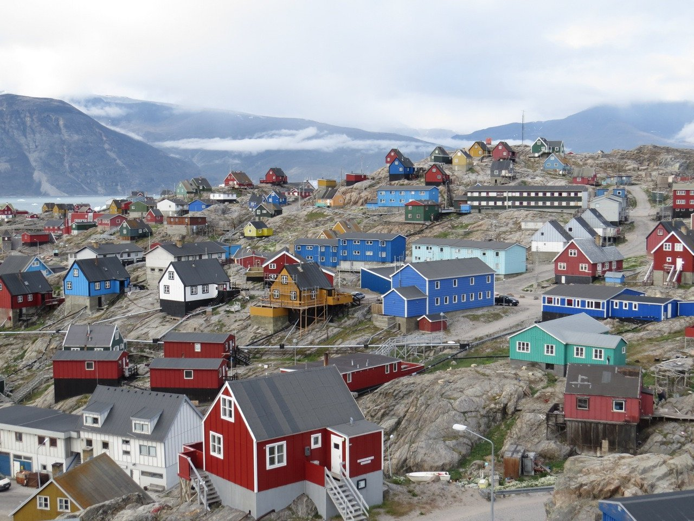
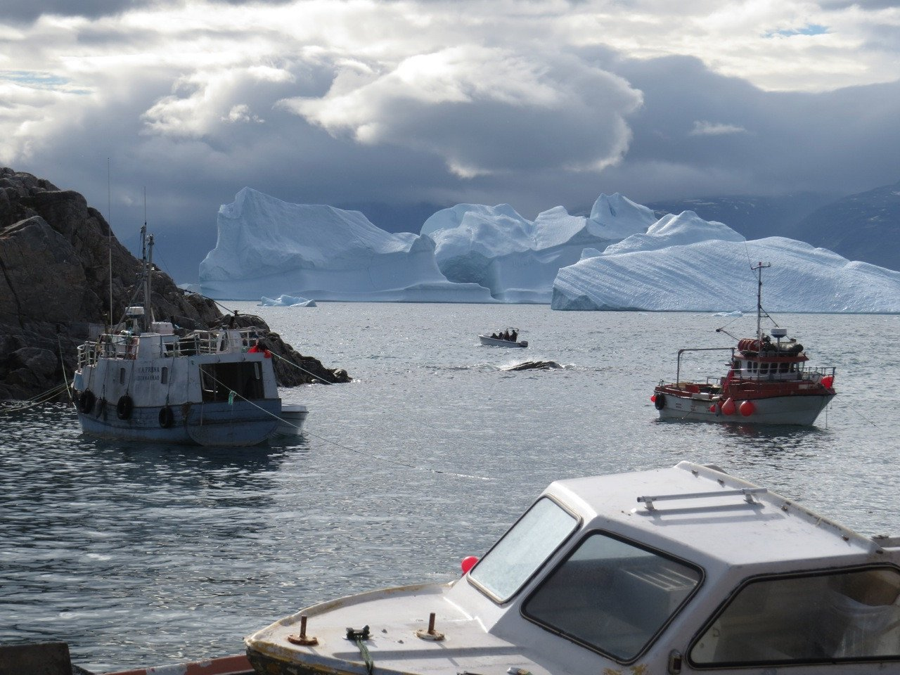
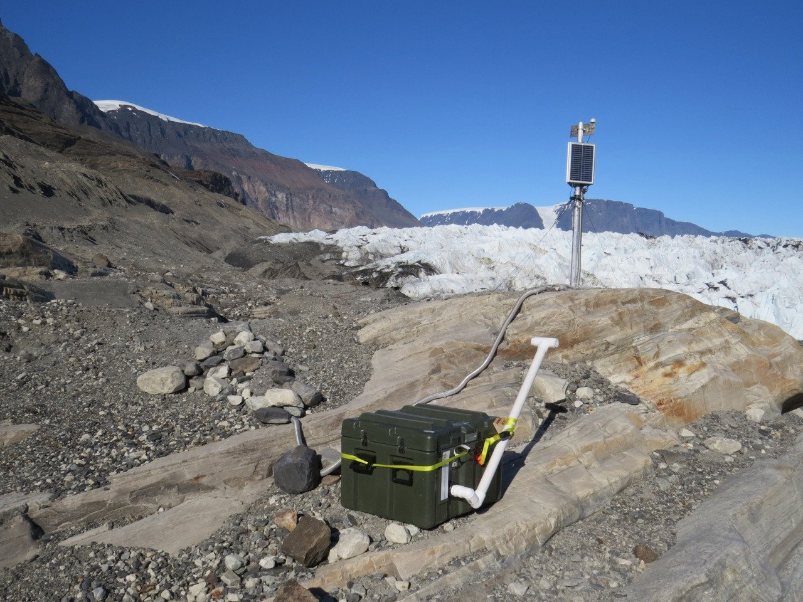
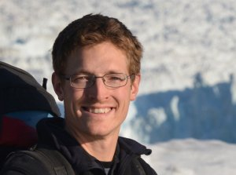

Ice sheet modeling to inform sea level rise planning
At AGU 2024, in Washington, DC, I had the opportunity to illuminate the need for applied ice sheet modeling. Ice sheet modeling started out as a…
The Glacier Dynamics Group at the University of Idaho reveals the factors controlling the motion and rapid mass loss of glaciers and ice sheets. Our approach to research is fundamentally interdisciplinary.
Glaciers are noisy. Analyzing the vibrations from iceberg calving, sliding and flowing water is one of the ways we understand how glaciers change.



We draw on seismology and other geophysical techniques to understand glacier dynamics, including iceberg calving, water flow through glaciers, dynamic thinning, and the ice flow response to variable glacier hydrology. Through theory and numerical analysis, we test explanations for our glaciological observations. This work is motivated by the need to understand rapid glacier change, its impact on sea level, and on landscape change. Specifically, our research interests and expertise include:

The Glacier Dynamics Group is led by Dr. Timothy Bartholomaus at the University of Idaho, in Moscow, ID. Dr. Bartholomaus is a glaciologist, geophysicist, educator and Associate Professor. He was formerly a Research Associate and Postdoctoral Fellow at the University of Texas Institute for Geophysics, in Austin, TX. He received a Ph.D. in Geophysics from the University of Alaska in Fairbanks in December 2013, completed a master's degree at the University of Colorado Boulder, and a bachelor's degree at Dartmouth College.
I am currently working to better identify the factors controlling iceberg calving at adjacent tidewater glaciers in Western Greenland. Working as…
Many of the most rapid losses of ice from glaciers in Alaska, Greenland, Antarctica, and elsewhere are driven by increases in the rates of iceberg…
Water within and at the base of glaciers has a dramatic impact on the rate of glacier ice flow. However, the connection between water and ice flow…
Including our data archive for evaluating iceberg calving models at 50 Greenland glaciers.
At AGU 2024, in Washington, DC, I had the opportunity to illuminate the need for applied ice sheet modeling. Ice sheet modeling started out as a…
The University of Idaho will host the 2024 Future of Greenland ice Sheet Science (FOGSS) workshop April 3-5. The workshop will take place on the UI…
The UI Glacier Dynamics lab group and alums made an outstanding impression at the AGU fall meeting in SF last week. Six of us attended and shared…
Our group was so proud to host the 50th anniversary of the meeting of Northwest Glaciologists, here at UI, on Oct. 14-15, 2022. We had nearly 60…
We're so proud of our two most recent lab group graduates, who graduated this last summer. Dr. Chris Miele received his Ph.D. with a dissertation…
We’re always interested in new, clever, hard-working group members. Graduate students are supported through research and teaching assistantships. Learn about joining the group.